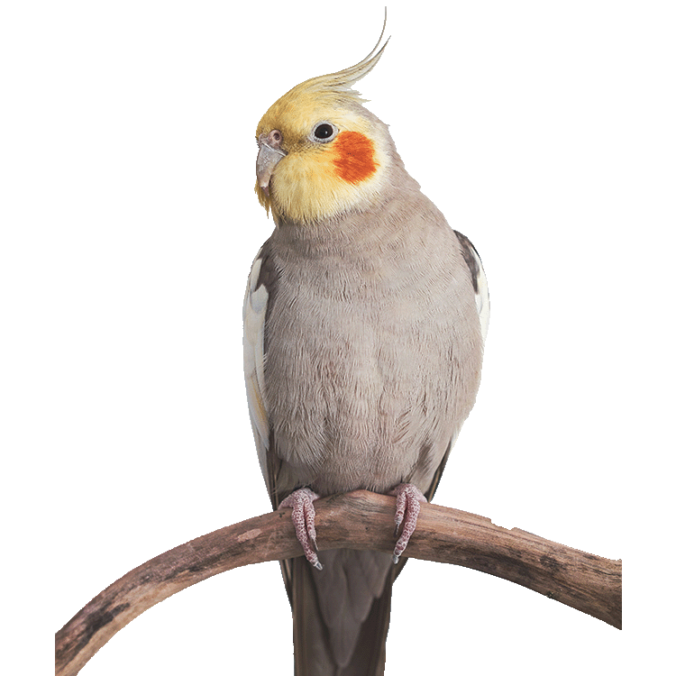
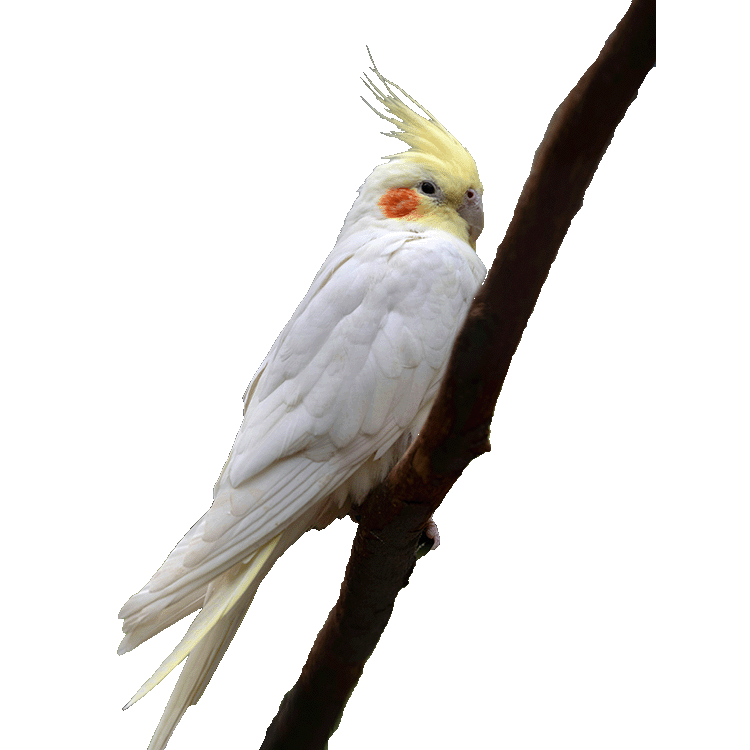

Cinnamon Cockatiel
The cinnamon mutation, first seen in the 1950s, is
very similar in appearance to the grey; however,
these birds have a warmer, browner colouring.
Pearling was first seen in 1967. This is seen as a
feather of one colour with a different coloured edge,
such as grey feathers with yellow tips. This
distinctive pattern is on a bird's wings or back.

Lutino Cockatiel
Lutino colouration was first seen in 1958.
These birds lack the grey of their wild counterparts and are
white to soft yellow. This is a popular colour; due
to inbreeding, these cockatiels often have a small bald
patch behind their crests.